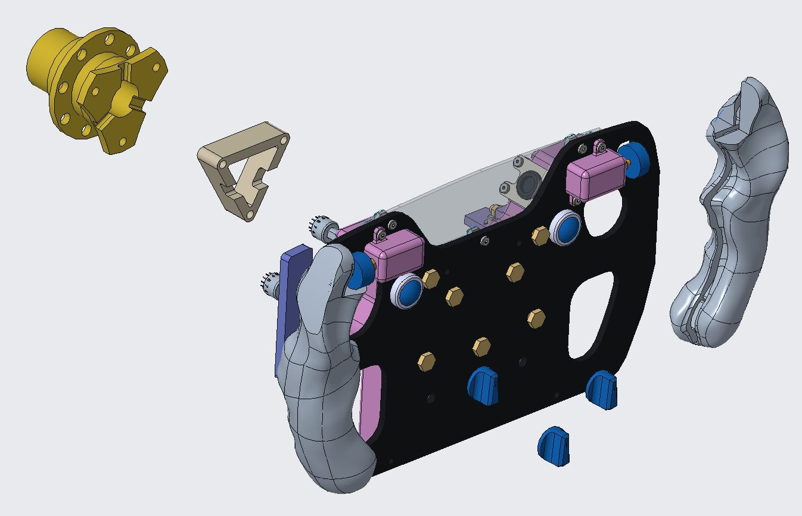

03 / 04 · Illini Electric Motorsports, Formula SAE Electric · Ongoing
Formula SAE Cockpit Subsystem
- GD&T (ASME Y14.5)
- Creo Parametric
- Bridgeport Manual Mill
- Design for Manufacturing
- Fixture Design
- Waterjet
Overview
The team designs and builds an electric Formula SAE car each season. The competition's cost event scores the documentation behind every part, so the drawing package is judged alongside the hardware and is a deliverable rather than a byproduct. I own the design of the cockpit steering hardware, the machinist-ready drawing package for it, and a test jig that sizes the steering column.
Technical Approach
Tolerancing, machining, and fixture design
Parts modeled in Creo Parametric and toleranced to ASME Y14.5. I machine what I draw, on a Bridgeport, which is the feedback loop that keeps the prints buildable. Features that are easy to call out on screen are often awkward to hold and indicate on the machine, and running my own prints is what surfaces which is which.

U-Joint Thrust Force Testing Jig
Team project with the 2025-26 Steering System lead
The Steering System project lead wanted a thrust force test jig for the two universal joints: a waterjet-ready fixture that loads the assembled column at a set break angle under torque, so the lower support is sized against a measured thrust rather than a tolerance stack-up.
I designed a jig that isolates the motion of the double U-joint so a scale can read the thrust the lower joint puts out while the upper joint is turned from the steering wheel end, through the steering wheel quick disconnect spline and a small key in the jig. I modeled it in Creo Parametric and cut it as flat waterjet profiles out of 0.08 and 0.25 inch AR500 steel, so the geometry is recut rather than redesigned when the column changes. The column turns slowly under representative torque through full revolutions in both directions against the scale, because the push is not steady through a turn, so it has to be read while the column is moving rather than parked.
The main challenge was constraining the various degrees of freedom the double U-joint has while keeping the jig simple to manufacture. The team's waterjet was chosen for that reason.
Outcomes
- Parts reach the machinist without a follow-up conversation, which is the real test of whether the tolerancing was right.
- Machining my own prints changed how I dimension: what is easy to call out on screen can be awkward to hold.
- The 2026-27 car is still in build, so there is no measured vehicle result yet.
Challenges
- I had taken milling as a course, but producing a drawing package another student can build from is a different problem. Deciding how tightly to tolerance a feature means knowing what the shop can hold, which coursework does not teach.
- Machining my own prints on the Bridgeport is where I found out what my drawings cost. Features I had called out because they were easy to model were awkward to hold and indicate on the machine.
- I joined the team a year ago and was promoted to Steering Wheel Project Lead in July 2026, so most of the steering hardware and its history were other people's decisions. Working out what had been settled, and why, before changing any of it took longer than the redesign.
- The team's one-year design cycle, and the number of components and projects needing to coexist on the same vehicle without conflicts, means decisions can be reversed and projects descoped suddenly. Keeping up with the constant updates on the state of different subsystems took some getting used to during onboarding.